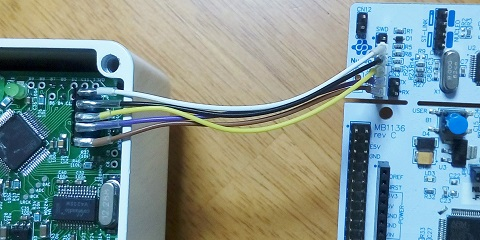
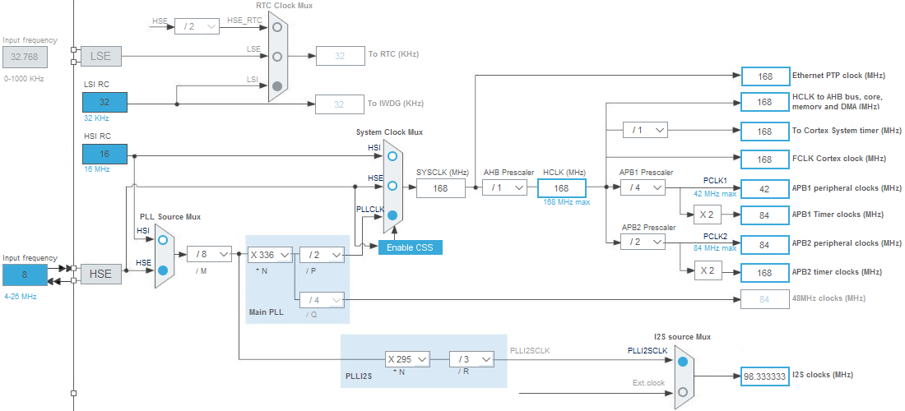
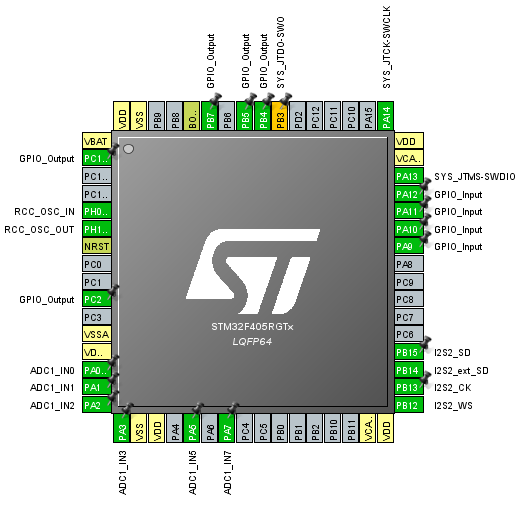
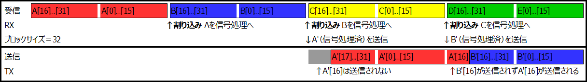

Owm Pedal ソフトウェア編
2019年03月06日 カテゴリー：STM32
自作デジタルエフェクター「Owm Pedal」の各設定、内部プログラミングをしていきます。
Owm Pedal ハードウェア編はこちら
内部データ、STM32CubeMX用iocファイルはGitHubへ
＜ピン、クロック設定＞
・ST-LINK接続
STM32CubeMX設定：System Core→SYS→Debug [Serial Wire]

上写真右上に見える2つのジャンパを外し、NucleoボードのST-LINK部分のみ使用します。SWDピンをそのままの順番でOwmボードへ接続できます。今回は外部から電源供給するため、3.3Vピンは接続しません。
・クロック源として外部水晶振動子を使用
STM32CubeMX設定：System Core→RCC→High Speed Clock (HSE) [Crystal/Ceramic Resonator]
▽クロック設定図

I2Sクロックは、オーディオサンプリングレート48kHzに対する誤差が少なくなるような設定としました（48×2048＝98304）。
▽全ピン設定図

PC2はデバッグ時オシロスコープを接続する場合に利用しています。
＜スイッチ＞
割り込みではなくメインループで処理しています。今までAVRマイコンでやっていたカウントを増やす方式なので、長押しにも対応できます。
＜ADC＞
設定方法は過去記事（→NucleoボードのADCを使う）と同じで、チャンネル数が増えるだけです。ポットの値の取得は低速で構わないため、Sampling Time : 144 Cycles としています。
＜I2S＞
設定方法は過去記事（→NucleoボードとオーディオコーデックICとの通信）と同じですが、I2Cは不使用です。信号処理を優先するため、DMAのPriorityは[Very High]に、他の割り込みの優先度は下記の通り変更しました。
STM32CubeMX設定：System Core→NVIC→
Time base: System tick timer→Preemption Priority [10]
DMA2 stream0 global interrupt→Preemption Priority [5]
今回は受信したデータを信号処理後に送信することになります。I2Sの受信バッファに半分データがたまると「HAL_I2SEx_TxRxHalfCpltCallback」という関数（以下Half関数）が呼び出されます。しかしデータが全て溜まったときの「HAL_I2SEx_TxRxCpltCallback」は呼び出されないバグがあるようです。修正方法がわからない（あまり調べていません）ので、このままHalf関数のみで処理するようにしました。Half関数は送信と受信で2回起こってしまうので、送信側(DMA1 Stream4)の割り込みは無効化しています。
※処理方法を変更しました。→HAL_I2SEx_TransmitReceive_DMA使用時の割り込み修正（2019年3月25日追記）
下図はブロックサイズを32（ステレオなのでバッファ配列の要素数は64）で処理する場合のものです。配列の1グループは16...31, 0...15の順番となります。

最初の割り込みでグループAを一旦全て信号処理配列へ移し、次の割り込みで信号処理後のグループA（A'）を送信バッファに送ります。このときA'[16]は送信されずA'[17]から送信されてしまいます。そこで処理後データA'を送信バッファへ代入するとき、1サンプルずらしています。もっとスマートに解決する方法（FIFO?）がありそうですが、現状問題が起こっていないので追求していません。遅延時間（レイテンシ）実測値は、ブロックサイズ16で1.7ms、32で2.4ms程度でした。
通常のやり方は、最初の割り込みの時にグループAのデータを1つずつ信号処理と送信を行うというものだと思います。しかしその場合たまに波形が乱れることがあったので、今回は少し回りくどい方法を採用しています。遅延が余計に発生してしまいますが…
＜I2Sエラー対処＞
たまにI2S通信がうまくいかないことがありましたが、フレームエラーというのが起こっていました。マスター（オーディオコーデックV4220M）がクロック送信する前にスレーブ側（マイコン）のI2S設定をする方がいいようです。デバッグ時は先にV4220Mが起動しているためかエラーが起こりやすく、エラー時はソフトリセットで対応するようにしました。本来はI2Sのみのリセットで済むかもしれませんが、DMAを使っているため全リセットするのが確実でしょう。電源を入れなおした際はV4220Mが後から起動するため、エラーはほぼ発生しません。とはいえオーディオコーデックのリセットピンはマイコンと繋げておくべきだったと思います。
＜エフェクト処理＞
main.cとmain.hのユーザーコード部分を編集する以外に、2つのファイル（fx.c、overdrive.c）を追加しています。詳細はコード内のコメントをご参照ください。エフェクトはとりあえずオーバードライブで、操作はフットスイッチ（バイパス）、左上ポット（LEVEL）、右上ポット（GAIN）、中央LEDのみ使っています。
overdrive.cでフィルタを使っていますが、過去のデータ（x1、y1）を利用するため、static修飾子を付けて前の計算結果を残したままにしておく必要があります。その結果、フィルタの数だけ関数を準備しておく状態となっています。今後複雑なエフェクトに対応するために、C++言語を使う必要性が出てきそうです。